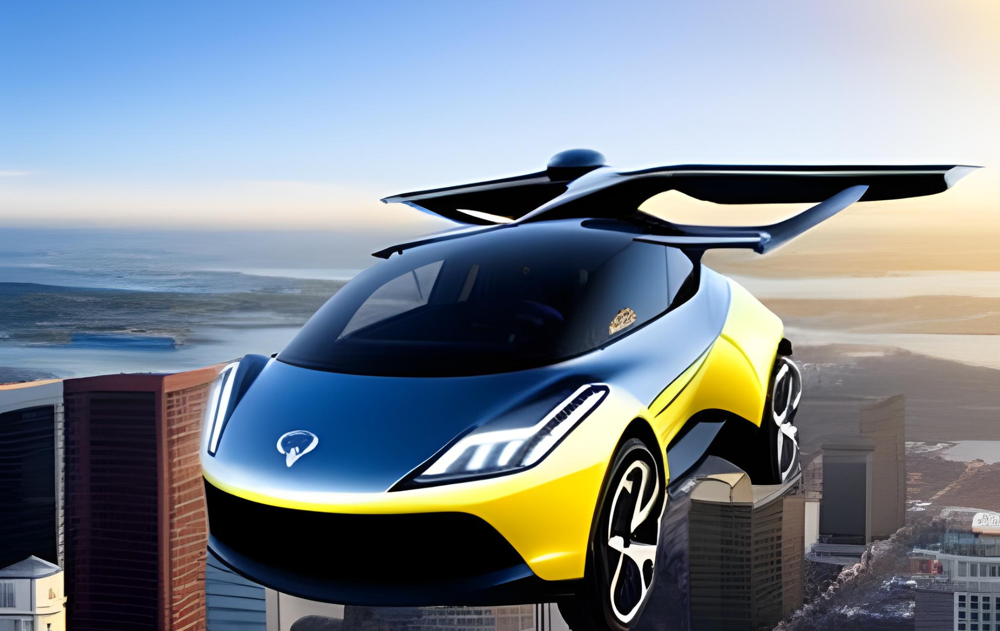

"The Promise of Personal Flying Cars" encapsulates the exciting potential of a future where individuals can soar through the skies, bypassing traffic congestion, and reaching their destinations faster. These innovative vehicles hold the key to enhanced mobility, time-saving advantages, and the transformation of urban landscapes, promising a thrilling and personalized travel experience unlike anything before.
Introduction:
Embark on an extraordinary journey into the future, where the wonders of personal flying cars await. Imagine a world where commuting becomes an exhilarating adventure and the skies become your highway to freedom. In this blog post, we invite you to explore the boundless potential and captivating experience of personal flying cars.
Unveiling the Potential:
Discover the remarkable promises held by personal flying cars as they redefine transportation. Delve into their ability to bypass traffic congestion, reduce travel times, and grant unparalleled mobility. Experience the thrill of taking flight and witness the transformative impact they can have on our lives.
Cutting-Edge Technology Takes Flight:
Dive into the cutting-edge technologies propelling personal flying cars forward. From advanced electric propulsion systems to intelligent navigation and control mechanisms, explore the innovative engineering that makes these vehicles soar with safety and precision. Gain insights into the rigorous safety measures and regulatory frameworks shaping their development.
 Discover the Future of Transportation with Flying CarsBeyond Boundaries: Aerial Mobility Advantages:
Immerse yourself in the benefits of aerial mobility offered by personal flying cars. Embrace the newfound accessibility to remote areas, the capability to conquer challenging terrains, and the potential for efficient emergency response. Unleash the opportunities for industries like medical transportation, tourism, and urban planning, where personal flying cars can revolutionize the way we operate.
Trailblazers and Success Stories:
Meet the visionaries and companies pushing the boundaries of personal flying cars. Discover the pioneers who are turning dreams into reality through their relentless pursuit of innovation. Be inspired by the success stories that showcase the potential of these vehicles through prototype testing, awe-inspiring aerial demonstrations, and real-world applications.
Revolutionary Nature:
Personal flying cars are at the forefront of transportation innovation, pushing the boundaries of what was once thought possible. They challenge the status quo and redefine our understanding of how we can move from one place to another. By introducing this concept, we invite readers to break free from the limitations of traditional transportation modes and envision a future where the skies become the new highways.
Transformative Potential:
Personal flying cars are at the forefront of transportation innovation, pushing the boundaries of what was once thought possible. They challenge the status quo and redefine our understanding of how we can move from one place to another. By introducing this concept, we invite readers to break free from the limitations of traditional transportation modes and envision a future where the skies become the new highways.
Advantages and Benefits:
Personal flying cars offer a range of advantages and benefits that make them a revolutionary mode of transportation. These include:
Time-saving:
By bypassing traffic congestion and utilizing the airspace, personal flying cars can significantly reduce travel times, enabling individuals to reach their destinations faster and more efficiently.
Flexibility and Accessibility:
Personal flying cars provide enhanced flexibility, allowing users to travel directly from point A to point B without being constrained by traditional road networks. They also offer improved accessibility to remote areas and regions with challenging terrains.
Freedom of Movement:
With personal flying cars, individuals can experience a new level of freedom and autonomy in their travel. They are not bound by fixed routes or schedules, giving them the ability to explore new horizons and reach destinations that were previously difficult to access.
Technological Innovation:
Personal flying cars are powered by advanced technologies that make them feasible and safe. These include electric propulsion systems, sophisticated navigation and control mechanisms, and innovative safety features. By introducing these technological innovations, we highlight the engineering prowess behind personal flying cars and instill confidence in their reliability and performance.
Future Impact:
The introduction of personal flying cars as a revolutionary mode of transportation prompts us to consider the broader impact on various aspects of society. This includes urban planning, emergency response, tourism, and the environment. Personal flying cars have the potential to reshape urban landscapes, with the integration of designated landing pads and advanced air traffic management systems. They can also improve emergency response times and transform the tourism industry by offering unique and memorable experiences. Additionally, personal flying cars contribute to reducing carbon emissions and addressing environmental concerns associated with traditional transportation.
Conclusion:
Personal flying cars have the potential to revolutionize transportation systems as we know them. They address the challenges and limitations of traditional ground transportation, such as traffic congestion, long commuting hours, and limited mobility options in crowded urban areas. By introducing personal flying cars as a solution, we present an alternative that can alleviate these issues and transform the way we commute and travel.